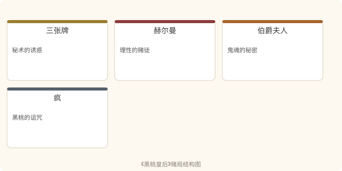

黑桃皇后
一、基本信息
| 作者 | 普希金 |
|---|---|
| 成书/出版 | 1834年（通说待核；作者页 B143 口径：major_works 载'黑桃皇后、上尉的女儿'） Aleksandr Pushkin — Encyclopaedia Britannica（百科全书） |
| 国别/地区 | 俄国 |
| 时代 | 近代 · 19世纪 |
| 体裁 | 短篇小说 |
| 语言 | 俄语 |

《黑桃皇后》赌局结构图（主题·结构图）
二、创作背景
作者页（B143）：普希金 major_works 载'黑桃皇后、上尉的女儿'（B143 作者页定位，详见 aonijin 条核对）。
普希金为俄国文学之父（作者页定位）。
三、内容脉络
赌徒赫尔曼以'三张牌'秘术赌命——丽莎维塔与老伯爵夫人的悲剧（通说待核）。
结尾：赫尔曼疯于'黑桃皇后'（通说待核）。
四、主要人物表
| 人物 | 身份 | 说明 |
|---|---|---|
| 赫尔曼 | 军官 | 赌徒（通说待核） |
| 伯爵夫人 | 老妇 | 秘术的持有者（通说待核） |
五、主题与艺术特点
- 赌与贪的神秘主义（通说）。
- 圣彼得堡的幽灵（通说）。
- 散文体的紧凑（通说）。
六、影响与评论
- 作者页：普希金后期名篇（B143 作者页口径）。
Aleksandr Pushkin — Encyclopaedia Britannica（百科全书） - 柴可夫斯基同名歌剧（1890——通说待核）。
Aleksandr Pushkin — Encyclopaedia Britannica（百科全书）
七、阅读建议
难点
- 俄国牌戏与称谓。
- 神秘主义调子。
- 《黑桃皇后》（人民文学出版社《普希金全集》，通说待核）。
- 英文原版（公有领域）。
先《叶甫盖尼·奥涅金》后本作。
八、待核实
- 1834年（《读者文库》说）核对。
- 赫尔曼/丽莎维塔人名核对。
- 歌剧1890年核对。
本页主要来源
普希金的其他收录作品：叶甫盖尼·奥涅金